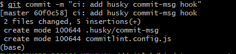
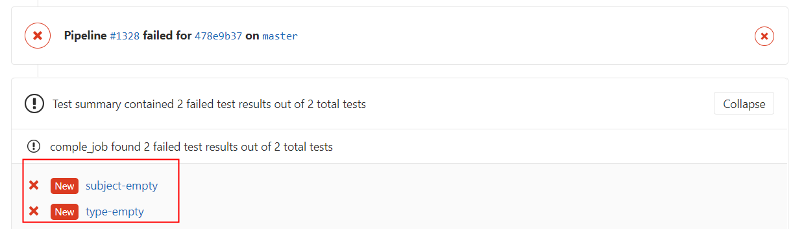
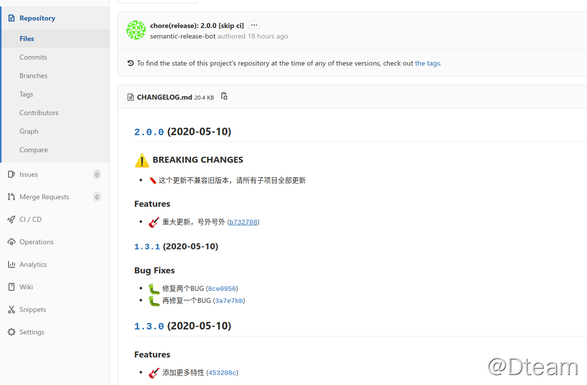

版本自动发布
规范化 git commit 信息
用于识别 Feat, Fix, Test 等特性。
1. commit基本要求
Git-Commit-Best-Practices这个项目总结了一个最基本的 git commit 实践:
- Commit Related Changes（ 提交相关的改变）
- Commit Often （经常提交）
- Don’t Commit Half-Done Work （只提交完成的工作）
- Test Your Code Before You Commit （提交前需要测试代码）
- Write Good Commit Messages（写良好的提交记录）
- Use Branches （使用分支）
- Agree on A Workflow （认同工作流）
2. 开源项目的Commit示例
Angular项目，可以很方便的生成Release Notes

3. Commit 规范
commit 基本格式如下:
type用于说明 commit 的类别，只允许使用下面 7 个标识:
feat：新功能（feature）fix：修补 bugdocs：文档（documentation）style： 格式（不影响代码运行的变动）refactor：重构（即不是新增功能，也不是修改 bug 的代码变动）test：增加测试chore：构建过程或辅助工具的变动ci：CI 相关的改动perf：性能提升的代码改动（不新增功能）
通常feat和fix会被放入 changelog 中，其他(docs、chore、style、refactor、test)通常不会放入 changelog 中。
scope用于说明 commit 影响的范围，可选值。通常是文件、路径、功能等。
subject是 commit 目的的简短描述，不超过 50 个字符。
Body部分是对本次 commit 的详细描述，可以分成多行。
Footer 部分只用于两种情况:
Break Changes：不兼容变动Closes：关闭Issue
示例：
4. 本地配置git commit规范检查
4.1 commit之后通过命令进行检查
在git commit的hook中加入commitlint检测，不符合 commit 规范的提交在本地就无法提交进去。
# 1. 安装commitlint命令行和验证使用的规则config-conventional
npm install -g @commitlint/config-conventional @commitlint/cli
# linux shell 或者 windows git-bash环境执行echo命令
# 2.1 单个项目的配置文件，每个项目可以配置不同的commit lint规范
echo "module.exports = {extends: ['@commitlint/config-conventional']}" > commitlint.config.js
# 2.1 全局commitlint.config.js配置windows下暂时不知如何配置
# 3. 验证最新一条提交记录(必须添加上述配置，否则需要加上 -x "@commitlint/config-conventional")
commitlint -e
# 3.2 检查信息是否符合配置（linux shell 或者 windows git-bash）
echo "your commit message" | commitlint
4.2 集成git命令在commit时检查
git-cz 是一个简化版的commitizen+cz-conventional-changelog组合，提供了开箱即用的功能，默认使用Angular规范，默认模板不填写scope部分内容。
# 安装git-cz包
npm install -g git-cz
# 以后所有使用git commit的地方都用git-cz或git cz命令提交代码
# 交互式使用，兼容git commit 的参数，比如-a, --amend
git cz
4.3 添加git hook在commit时检查（推荐）
NodeJS项目
NodeJS 项目直接使用 husky：
安装@commitlint/cli和@commitlint/config-conventional这两个包（建议安装到全局，这样所有项目都可以用）:
然后在 package.json 添加 husky 配置:
{
"husky": {
"hooks": {
"commit-msg": "commitlint -x @commitlint/config-conventional -E HUSKY_GIT_PARAMS"
}
}
}
然后使用git commit会触发husky的hook，检测commit记录是否符合规范。
其他类型项目
其它项目，手动添加 git hook，仍然使用husky
# 全局安装husky
npm install -g husky
# 1. 安装commitlint命令行和验证使用的规则config-conventional
npm install -g @commitlint/config-conventional @commitlint/cli
项目中初始化husky配置
# husky 对项目进行初始化，创建目录.husky目录和脚本husky.sh
husky install
# 添加commit-msg hook，执行`npx commitlint --edit $1` 命令，对commit message进行检验
husky add .husky/commit-msg "commitlint -x @commitlint/config-conventional --edit $1"
# 可选，如果不用-x @commitlint/config-conventional，则需要项目中配置commitlint.config.js文件
# echo "module.exports = {extends: ['@commitlint/config-conventional']}" > commitlint.config.js文件
执行git commit时（注意空格），会进行命令输出


删除 husky 和 git hook
5. gitlab CI 配置 git commit 规范检查
第4部分内容是在开发本地做的，因此需要禁止开发人员删除hook。
在 gitlab ci 中运行以下命令检测当前提交是否符合 conventional-changelog 规范:
image: node:latest
stages:
- test
compile_job:
stage: test
script:
- npm install "@commitlint/cli" "@commitlint/config-conventional" "commitlint-format-junit"
- npx commitlint -x @commitlint/config-conventional -o commitlint-format-junit -f ${CI_COMMIT_BEFORE_SHA} > commitlint_result.xml
artifacts:
name: "$CI_JOB_NAME-$CI_COMMIT_REF_NAME"
reports:
junit: commitlint_result.xml
$CI_COMMIT_BEFORE_SHA是 gitlab ci 的内置变量；
将 lint result 输出为 Junit 格式，方便 Gitlab 在 merge request 的时候展示 lint 失败的结果，如下图所示。
semantic-release 自动发布
更适合在 CI 环境中运行，自带支持各种 git server 的认证支持，如 Github，Gitlab，Bitbucket 等等，此外，还支持插件，以便完成其他后续的流程步骤，比如自动生成 git tag 和 release note 之后再 push 回中央仓库，自动发布 npm 包等等。
大致的工作流如下:
- 提交到特定的分支触发 release 流程
- 验证 commit 信息，生成
release note，打git tag - 其他后续流程，如生成
CHANGELOG.md，npm publish等等（通过插件完成）
npm install -g @semantic-release
- 默认安装 "@semantic-release/commit-analyzer"，"@semantic-release/github"，"@semantic-release/npm"， "@semantic-release/release-notes-generator"
版本号更新逻辑
版本号更新的逻辑：只有 feat 和 fix 提交才会触发版本升级
- 如果包含 feat 记录，版本由1.0.0升级到了1.1.0
- 只有 fix 记录，版本由1.1.0升级到了1.1.1
- feat 且 commit footer内有
BREAKING CHANGE:提交将会升级主版本号,版本由1.2.0升级到了2.0.0
Git 仓库认证
https://github.com/semantic-release/semantic-release/blob/master/docs/usage/ci-configuration.md#authentication
Gitlab 仓库需要配置 GL_TOKEN or GITLAB_TOKEN
生命周期
| Step | Description |
|---|---|
| Verify Conditions | Verify all the conditions to proceed with the release. |
| Get last release | Obtain the commit corresponding to the last release by analyzing Git tags. |
| Analyze commits | Determine the type of release based on the commits added since the last release. |
| Verify release | Verify the release conformity. |
| Generate notes | Generate release notes for the commits added since the last release. |
| Create Git tag | Create a Git tag corresponding to the new release version. |
| Prepare | Prepare the release. |
| Publish | Publish the release. |
| Notify | Notify of new releases or errors. |
插件
@semantic-release/commit-analyzer(自带)
analyze commits with conventional-changelog
- 默认
preset使用 angular 形式的commit规范；
@sematic-release/release-notes-generator(自带)
generate changelog content with conventional-changelog
通过conventional-changelog插件，生成从上个release到现在的变更信息。
- 默认
preset使用 angular 形式的commit规范；
@semantic-release/changelog
Create or update a changelog file in the local project directory with the changelog content created in the generate notes step.
创建或更新changelog文件（默认路径为 CHANGELOG.md）
- 如果和
@semantic-release/git和@semantic-release/npm共用，则其位置必须在最前面。
@semantic-release/git
- 支持将某些文件反向 push 回中央仓库（并添加
skip cicommit 信息跳过 CI ） - 默认的文件为
['CHANGELOG.md', 'package.json', 'package-lock.json', 'npm-shrinkwrap.json']
配置，.releaserc
{
"plugins": [
["@semantic-release/git", {
// 配置哪些文件会被 add 推送回仓库
"assets": ["Dockerfile", "./build/userservice.yaml","./build/version.md", "CHANGELOG.md"],
// 自定义 commit 信息的格式
"message": "chore(release): ${nextRelease.version} [skip ci]\n\n${nextRelease.notes}"
}
],
]
}
@semantic-release/gitlab
publish a GitLab release
默认会通过 CI_API_V4_URL内置的环境变量识别 Gitlab 的地址
- 如果 Gitlab SSL 没配置好，可能会出现 404 的问题，此时通过CI/CD重新定义该变量，解决问题。
{
"plugins": [
"@semantic-release/commit-analyzer",
"@semantic-release/release-notes-generator",
"@semantic-release/changelog",
"@semantic-release/git",
["@semantic-release/gitlab", {
"assets": [
{"path": "README.md", "label": "CSS distribution"}
]
}]
]
}
assets 字段
| Property | Description | Default |
|---|---|---|
path |
Required, unless url is set. A glob to identify the files to upload. |
- |
url |
Alternative to setting path this provides the ability to add links to releases, e.g. URLs to container images. Supports Lodash templating. |
- |
label |
Short description of the file displayed on the GitLab release. Ignored if path matches more than one file. Supports Lodash templating. |
File name extracted from the path. |
type |
Asset type displayed on the GitLab release. Can be runbook, package, image and other (see official documents on release assets). Supports Lodash templating. |
other |
filepath |
A filepath for creating a permalink pointing to the asset (requires GitLab 12.9+, see official documents on permanent links). Ignored if path matches more than one file. Supports Lodash templating. |
- |
@semantic-release/exec
execute custom shell commands.
配置（.releaserc）
{
"plugins": [
"@semantic-release/commit-analyzer",
"@semantic-release/release-notes-generator",
["@semantic-release/exec", {
"verifyConditionsCmd": "./verify.sh",
"publishCmd": "./publish.sh ${nextRelease.version} ${branch.name} ${commits.length} ${Date.now()}"
}],
]
}
生命周期
| Step | Description |
|---|---|
verifyConditions |
Execute a shell command to verify if the release should happen. |
analyzeCommits |
Execute a shell command to determine the type of release. |
verifyRelease |
Execute a shell command to verifying a release that was determined before and is about to be published. |
generateNotes |
Execute a shell command to generate the release note. |
prepare |
Execute a shell command to prepare the release. |
publish |
Execute a shell command to publish the release. |
success |
Execute a shell command to notify of a new release. |
fail |
Execute a shell command to notify of a failed release. |
google/semantic-release-replace-plugin
update version strings throughout a project.
修改特定文件中的版本号信息。
配置
{
"plugins": [
"@semantic-release/commit-analyzer",
[
"@google/semantic-release-replace-plugin",
{
"replacements": [
{
"files": ["foo/__init__.py"],
"from": "__VERSION__ = \".*\"",
"to": "__VERSION__ = \"${nextRelease.version}\"",
"results": [
{
"file": "foo/__init__.py",
"hasChanged": true,
"numMatches": 1,
"numReplacements": 1
}
],
"countMatches": true
}
]
}
],
[
"@semantic-release/git",
{
"assets": ["foo/*.py"]
}
]
]
}
版本号需求的不同阶段
说明：
semantic-release是最后进行执行，因为会需要将CHANGELOG等变更文件推回 git 仓库；- 项目构建时，需要根据版本号出制品（如zip包，docker image tag等）；
semantic-relase执行镜像跟项目的构建镜像不会是一个镜像；- 版本制品会区分快照（SNAPSHOT）和发布（RELEASE）；
因此：
- 通过
semantic-release的dry模式，区分release/snapshot，先生成版本号； - 根据版本号进行项目构建，出相应版本的制品；
semantic-release变更文件推回git仓库，并创建 Git Tag；
Gitlab CI 使用
- 项目工程中添加
.releaserc配置 - 默认的插件顺序是
commit-analyzer, release-notes-generator, npm, github,
{
"plugins": [
"@semantic-release/commit-analyzer",
"@semantic-release/release-notes-generator",
"@semantic-release/changelog",
"@semantic-release/git"
]
}
.gitlab-ci.yml配置（gitlab-runner运行环境为powershell)
# lint 过程用于检测 commitlint 结果
# release 过程用于自动化产生 git tag 和 CHANGELOG.md
stages:
- lint
- build
- deploy
- release
commitlint:
stage: lint
# node:lts 镜像并包含 npm install -g @commitlint/cli @commitlint/config-conventional commitlint-format-junit
# @semantic-release @semantic-release/gitlab @semantic-release/git @semantic-release/changelog @semantic-release/exec
image: ${GIT_NODE_IMAGE}
script: |
if [ "${CI_COMMIT_BEFORE_SHA}" = "0000000000000000000000000000000000000000" ]; then
npx commitlint -x @commitlint/config-conventional -f HEAD^
else
npx commitlint -x @commitlint/config-conventional -f "${CI_COMMIT_BEFORE_SHA}"
fi
echo "===${CI_COMMIT_REF_NAME}===${CI_COMMIT_BRANCH}"
# --dry-run 模式，预先生成版本号，区分 release / snapshot
if [ "${CI_COMMIT_REF_NAME}" == "master" ]; then
npx semantic-release --dry-run --no-ci
echo "VERSION_VAR=`cat VERSION`" > build.env
cat build.env
else
echo "VERSION_VAR=SNAPSHOT-`cat VERSION`-`date "+%Y%m%d-%H%M%S"`" > build.env
cat build.env
fi
# 通过环境变量传递版本号
artifacts:
reports:
dotenv: build.env
build:
stage: build
image: ${MKDOCS_IMAGE}
# 构建版本制品，并上传制品库
script:
- mkdocs build
- ls -all ./
- tar -zcvf helpdoc-${VERSION_VAR}.tar.gz site
- curl -v --user 'admin:admin123' --upload-file helpdoc-${VERSION_VAR}.tar.gz http://172.16.1.217:8081/repository/static/helpdoc/helpdoc-${VERSION_VAR}.tar.gz
artifacts:
paths:
- helpdoc-*.tar.gz
expire_in: 1 hour
deploy:
stage: deploy
# 通过 SSH 部署到机器
image: ${SSHPASS_IMAGE}
script:
- sshpass -p ${NODE_125_PASSWD} scp -o StrictHostKeyChecking=no helpdoc-${VERSION_VAR}.tar.gz root@${NODE_125_IP}:/tmp
- sshpass -p ${NODE_125_PASSWD} ssh -o StrictHostKeyChecking=no root@${NODE_125_IP} "cd /tmp && rm -rf site && tar -zxvf helpdoc-${VERSION_VAR}.tar.gz && rm -rf /home/experiment/web_ai_education/nginx/html/help/ && mv site /home/experiment/web_ai_education/nginx/html/help/ && cd /home/experiment/web_ai_education/nginx/ && ./sbin/nginx -s reload"
release:
stage: release
image: ${GIT_NODE_IMAGE}
script:
# 生成版本号，更新CHANGELOG，并推回仓库
- npx semantic-release
only:
- master
dependencies: []
- gitlab项目环境变量配置（GITLAB_TOKEN或者GL_TOKEN）
效果图示例（master分支构建流水线）：
